Using Subversion with Studio
Subversion facilitates the tracking and versioning of changes developers make to a software project; this enables several people to work on the same project simultaneously without creating conflicts among the changes and additions they make.
Studio enables you to work with Subversion (SVN) in two ways: you can save your Studio project to an SVN repository, or you can import your existing projects from SVN into Studio. To move projects between Studio and SVN, you must first install Subversion’s Subeclipse plugin in Studio.
Installing the Subversion Plugin
-
From Studio, click Help, then select Install New Software…
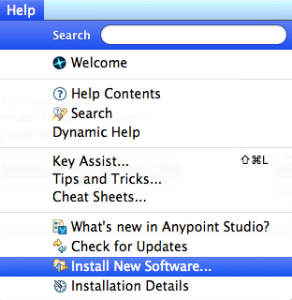 -
In the Available Software panel, click Add and provide the following name and URL.
Note: Use "1.8.x" as shown (the .x is not a placeholder):
Subclipse Update Site — http://subclipse.tigris.org/update_1.8.x
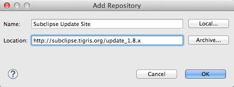 -
Click the check box to select both Subclipse and SVNKit.
-
DESELECT ` Subclipse Integration for Mylyn 3.x (Optional) 3.0.0 ` so that Studio does not install this portion.
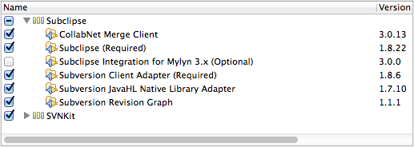 -
Click Next to continue.
-
In the Install Details panel, click Next to continue installation.
-
In the Review Licenses panel, select I accept the terms of the license agreement then click Finish.
-
When Mule completes installation of the
Subeclipseplugin, click Restart Now to complete the installation and restart Studio.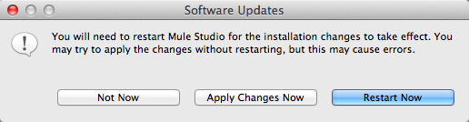 -
Starting from Studio’s application menu, click Window, (or Application Studio in Mac), and click Preferences.
-
Click the expand arrow next to Team, then select SVN.
-
In the SVN Interface pane, use the drop down menu in the Client field to select SVNKit and click OK:
SVNKit (Pure Java) SVNKit v1.7.9.9659
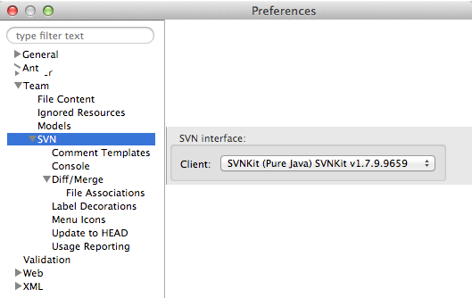 -
If you are using Mac OS, see http://subclipse.tigris.org/wiki/JavaHL for additional information.
Committing a Project
You can save a Studio project to an SVN repository so that multiple developers can save changes to the project in a single, shared location. When you have completed your individual work on a Studio project, you can check the project into the SVN repository, thus avoiding version conflicts with other users.
| This procedure assumes that you have already created and have read-write access to a shared Subversion repository. |
-
In Package Explorer, right click your project name, navigate to Team, then select Share Project….
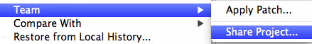 -
In the Share Project wizard, specify the location of your SVN project in the URI field, then click Next.
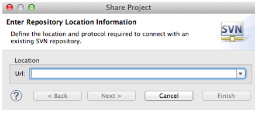If you have already configured an SVN repository in Studio, you can select Use existing repository location to commit your project to the existing repository. 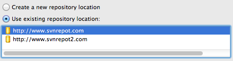 -
In the next wizard panel, specify the name of your project’s folder within the SVN repository.
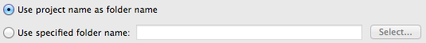 -
Click Next, then edit the commit comments, if you wish, to describe the changes you have made to the project.
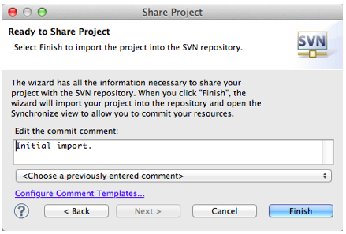 -
Click Finish.
-
Studio displays a panel that gives you the option to automatically open Synchronize View, which ensures that your local workspace does not conflict with your team’s repository. Click Yes to open the view and begin synchronizing your workspaces; click No to simply return to your local workspace in Studio.
Checking Out a Project
You may wish to check out a Subversion project and import it into Studio in order to leverage Studio’s graphical user interface. To do so, you must first install an SVN plugin, then access your SVN project from Studio.
| This procedure assumes that you have already created and have read-write access to a shared Subversion repository, and that you have saved to that repository the project you wish to access in Studio. |
-
Starting from Studio’s application menu, click Window, navigate to Open Perspective, then select Other…
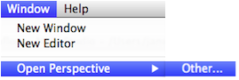 -
In the pop-up panel, select SVN Repository Exploring, then click OK.
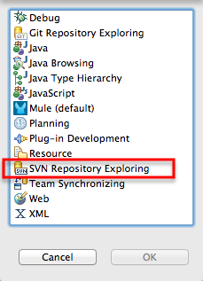To switch back to the Mule perspective, click the Mule icon next to SVN Repository Exploring. You can switch back and forth between perspectives as needed. 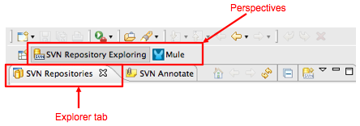 -
After Studio opens the new perspective, SVN Repository Exploring, right-click within the SVN Repositories explorer tab, select New, then Repository Location….
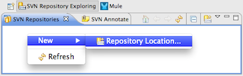 -
In the Url field, enter the location of your SVN repository and click Finish.
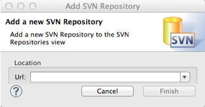 -
In the SVN Repository Exploring tab, right click your project name and select Checkout. Within context of Subversion, you are checking out the project from your SVN repository.
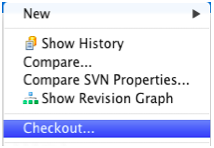 -
Click the Mule perspective to work on the project in Studio.
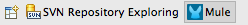 -
After you have completed your changes to your Studio project, you must commit your changes to the SVN repository. In the Mule perspective, click File, then Save.
-
In Package Explorer, right click your project name, navigate to Team, then select Commit….
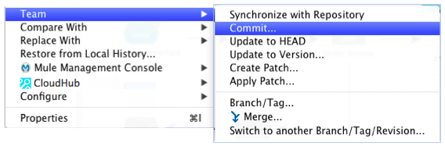 -
In the Commit message field of the Commit Changes panel, enter notes to describe what you have added or changed in the Studio project.
-
Click the check box next to all items listed in the Files pane, then click Commit to save the changes to the SVN repository.